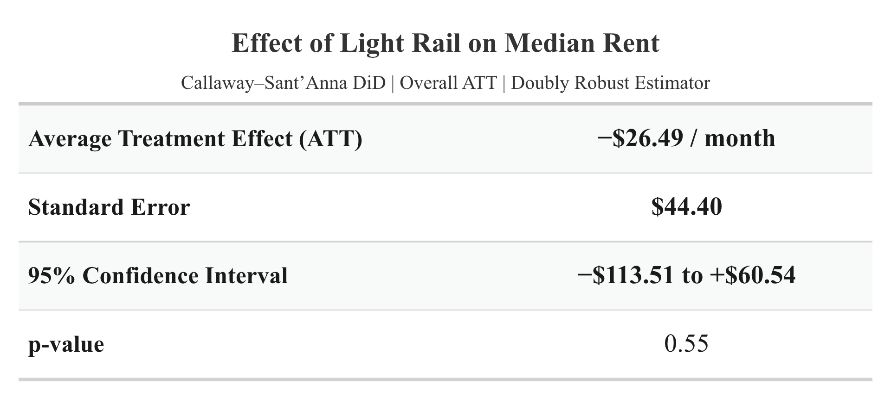
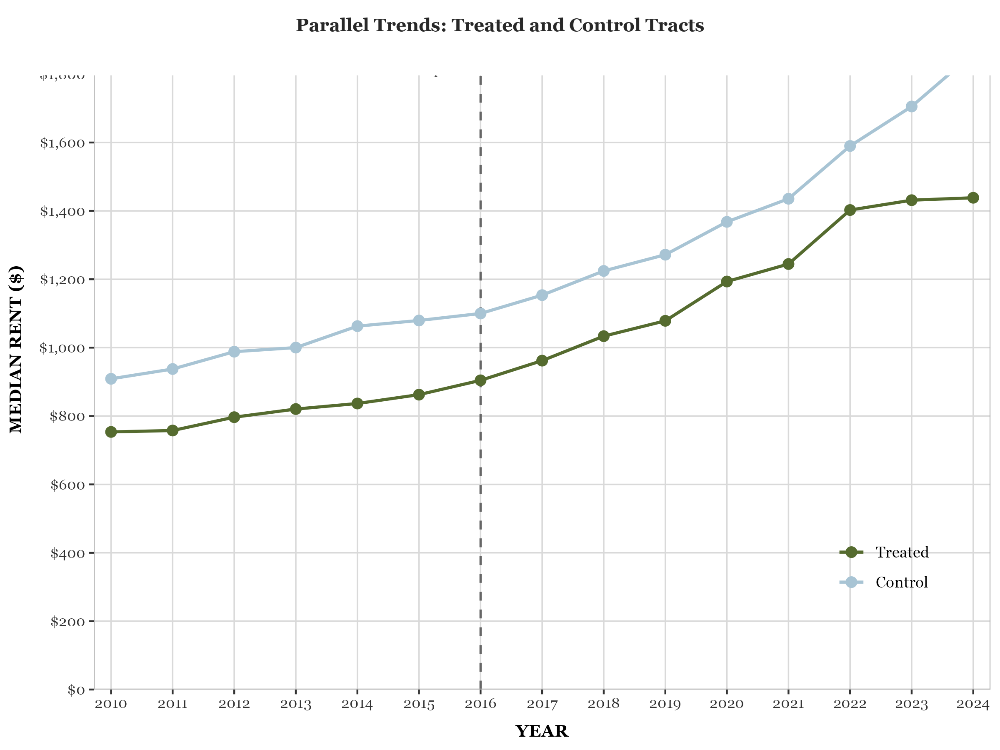
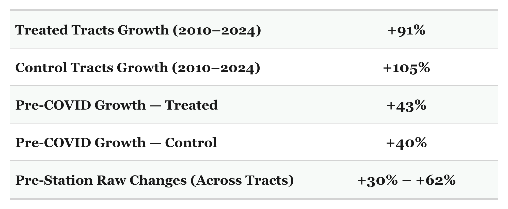

The Qualitative
As previously discussed, COVID-19 created a turbulent rental market. Station openings near the worldwide COVID-19 lockdown were going to show rent data not attributable to the effect of light rail. Even though the light rail effect may influence rent, it is most likely a soft one. Any effect that would have been apparent was drowned out by the radical change in rent caused by the period-specific external factors. These period-specific factors, while not completely invalidating the analysis, did prove to complicate the search for a clear effect. Endogeneity also proved to complicate the data, as the variables studied can feed into each other simultaneously. Light rail may influence rents, but the decision to develop a station may itself be related to neighborhood growth, rising rents, or expectations of future development. In that case, a rent increase after a station opening cannot automatically be interpreted as evidence that light rail caused the increase. The relationship may operate in both directions: neighborhoods expected to grow may attract light rail, while the new station may then contribute to additional rent growth. Anticipation was another complicated factor. If developers, landlords, or residents demonstrated anticipation that resulted in rent fluctuations, this would generate an effect during the pre-treatment period, which could potentially account for the absence of a consistent, shared trend prior to the opening.
The Quantitative
The Aggregate (Event Study)
When aggregated, the numbers point to pre-treatment stability. When you look at the market as a whole, the event study gives you a different answer than when you look at individual tracts. The pre-treatment stability supports the parallel trends assumption. The control and treated tracts, when contrasted, share enough similarity to warrant parallel trends before treatment. The confidence intervals are also contained, which is attributed to a sufficient amount of data provided for this time period. As the treatment takes effect, the points hardly budge from their original momentum. There is no clear break, which would help to discern or conclude a clear effect. The points hover near zero, then in the final two years dip substantially. The confidence intervals widen due to the decrease in the amount of data. The post-treatment period produces a null effect. The confidence intervals widening makes the estimates less precise.
The Individual (Parallel Trends)
Because it examines the tracts more thoroughly than the event study and helps to clarify ambiguous data, the parallel trends graph is the reality, or the disaggregated view. The results of the parallel trends graph contradict the event study implication of a parallel trend. Various graphs show various connections between the control and treated tracts. On the other hand, the substantial disparities between the tracts indicate that the event study oversimplified the period preceding treatment. There is not a clear confirmation of a parallel trend pre-treatment. The parallel trends graph reinforces the complex and varied array of results observed in each region as it prepared for light rail.



Lack of Detectable Effect
With the parallel trends graph lacking a clear pre-treatment trend that indicates commonality, the event study is weakened. The event study not displaying a clear break or change as the treatment takes place likely suggests no detectable aggregate effect.
Conclusion
The analysis did not show a clear statistically significant detectable effect. Pre-treatment patterns are not consistently comparable across treated and control tracts, and later-year estimates are noisy. The most defensible conclusion, therefore, is that station openings may have produced heterogeneous local effects, but the current design and noise make it difficult to summarize them with a single number. Analysis in the future should aim to focus on the soundness of the data and its modeling and the explicit modeling of the heterogeneous effects.